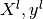
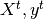
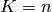

5.1. Cross-Validation¶
Learning the parameters of a prediction function and testing it on the same data yields a methodological bias. To avoid over-fitting, we have to define two different sets : a learning set  which is used for learning the prediction function (also called training set), and a test set  which is used for testing the prediction function. However, by defining these two sets, we drastically reduce the number of samples which can be used for learning the model, and the results can depend on a particular couple of learning set and test set.
A solution is to split the whole data in different learning set and test set, and to return the averaged value of the prediction scores obtained with the different sets. Such a procedure is called cross-validation. This approach can be computationally expensive, but does not waste too much data (as it is the case when fixing an arbitrary test set), which is a major advantage in problem such as inverse inference where the number of samples is very small.
5.1.1. Examples¶
5.1.2. Cross validation iterators¶
5.1.2.1. Leave-One-Out - LOO¶
LeaveOneOut The Leave-One-Out (or LOO) is a simple cross-validation. Each learning set is created by taking all the samples except one, the test set being the sample left out. Thus, for n samples, we have n different learning sets and n different tests set. This cross-validation procedure does not waste much data as only one sample is removed from the learning set:
>>> import numpy as np
>>> from sklearn.cross_validation import LeaveOneOut
>>> X = np.array([[0., 0.], [1., 1.], [-1., -1.], [2., 2.]])
>>> Y = np.array([0, 1, 0, 1])
>>> loo = LeaveOneOut(len(Y))
>>> print loo
sklearn.cross_validation.LeaveOneOut(n=4)
>>> for train, test in loo: print train, test
[False True True True] [ True False False False]
[ True False True True] [False True False False]
[ True True False True] [False False True False]
[ True True True False] [False False False True]
Each fold is constituted by two arrays: the first one is related to the training set, and the second one to the test set. Thus, one can create the training/test sets using:
>>> X_train, X_test, y_train, y_test = X[train], X[test], Y[train], Y[test]
If X or Y are scipy.sparse matrices, train and test need to be integer indices. It can be obtained by setting the parameter indices to True when creating the cross-validation procedure:
>>> import numpy as np
>>> from sklearn.cross_validation import LeaveOneOut
>>> X = np.array([[0., 0.], [1., 1.], [-1., -1.], [2., 2.]])
>>> Y = np.array([0, 1, 0, 1])
>>> loo = LeaveOneOut(len(Y), indices=True)
>>> print loo
sklearn.cross_validation.LeaveOneOut(n=4)
>>> for train, test in loo: print train, test
[1 2 3] [0]
[0 2 3] [1]
[0 1 3] [2]
[0 1 2] [3]
5.1.2.2. Leave-P-Out - LPO¶
LeavePOut Leave-P-Out is very similar to Leave-One-Out, as it creates all the possible training/test sets by removing P samples from the complete set.
Example of Leave-2-Out:
>>> from sklearn.cross_validation import LeavePOut
>>> X = [[0., 0.], [1., 1.], [-1., -1.], [2., 2.]]
>>> Y = [0, 1, 0, 1]
>>> loo = LeavePOut(len(Y), 2)
>>> print loo
sklearn.cross_validation.LeavePOut(n=4, p=2)
>>> for train, test in loo: print train,test
[False False True True] [ True True False False]
[False True False True] [ True False True False]
[False True True False] [ True False False True]
[ True False False True] [False True True False]
[ True False True False] [False True False True]
[ True True False False] [False False True True]
All the possible folds are created, and again, one can create the training/test sets using:
>>> import numpy as np
>>> X = np.asanyarray(X)
>>> Y = np.asanyarray(Y)
>>> X_train, X_test, y_train, y_test = X[train], X[test], Y[train], Y[test]
5.1.2.3. K-fold¶
The K-fold divides all the samples in K groups of samples, called folds (if , we retrieve the LOO), of equal sizes (if possible). The prediction function is learned using K - 1 folds, and the fold left out is used for test.
Example of 2-fold:
>>> from sklearn.cross_validation import KFold
>>> X = [[0., 0.], [1., 1.], [-1., -1.], [2., 2.]]
>>> Y = [0, 1, 0, 1]
>>> loo = KFold(len(Y), 2)
>>> print loo
sklearn.cross_validation.KFold(n=4, k=2)
>>> for train, test in loo: print train,test
[False False True True] [ True True False False]
[ True True False False] [False False True True]
5.1.2.4. Stratified K-Fold¶
The Stratified K-Fold is a variation of K-fold, which returns stratified folds, i.e which creates folds by preserving the same percentage for each class as in the complete set.
Example of stratified 2-fold:
>>> from sklearn.cross_validation import StratifiedKFold
>>> X = [[0., 0.], [1., 1.], [-1., -1.], [2., 2.], [3., 3.], [4., 4.], [0., 1.]]
>>> Y = [0, 0, 0, 1, 1, 1, 0]
>>> skf = StratifiedKFold(Y, 2)
>>> print skf
sklearn.cross_validation.StratifiedKFold(labels=[0 0 0 1 1 1 0], k=2)
>>> for train, test in skf: print train, test
[False True False False True False True] [ True False True True False True False]
[ True False True True False True False] [False True False False True False True]
5.1.2.5. Leave-One-Label-Out - LOLO¶
The Leave-One-Label-Out (LOLO) is a cross-validation scheme which holds out the samples according to a third-party provided label. This label information can be used to encode arbitrary domain specific stratifications of the samples as integers.
Each training set is thus constituted by all the samples except the ones related to a specific label.
For example, in the cases of multiple experiments, LOLO can be used to create a cross-validation based on the different experiments: we create a training set using the samples of all the experiments except one:
>>> from sklearn.cross_validation import LeaveOneLabelOut
>>> X = [[0., 0.], [1., 1.], [-1., -1.], [2., 2.]]
>>> Y = [0, 1, 0, 1]
>>> labels = [1, 1, 2, 2]
>>> loo = LeaveOneLabelOut(labels)
>>> print loo
sklearn.cross_validation.LeaveOneLabelOut(labels=[1, 1, 2, 2])
>>> for train, test in loo: print train,test
[False False True True] [ True True False False]
[ True True False False] [False False True True]
Another common application is to use time information: for instance the labels could be the year of collection of the samples and thus allow for cross-validation against time-based splits.
5.1.2.6. Leave-P-Label-Out¶
Leave-P-Label-Out is similar as Leave-One-Label-Out, but removes samples related to P labels for each training/test set.
Example of Leave-2-Label Out:
>>> from sklearn.cross_validation import LeavePLabelOut
>>> X = [[0., 0.], [1., 1.], [-1., -1.], [2., 2.], [3., 3.], [4., 4.]]
>>> Y = [0, 1, 0, 1, 0, 1]
>>> labels = [1, 1, 2, 2, 3, 3]
>>> loo = LeavePLabelOut(labels, 2)
>>> print loo
sklearn.cross_validation.LeavePLabelOut(labels=[1, 1, 2, 2, 3, 3], p=2)
>>> for train, test in loo: print train,test
[False False False False True True] [ True True True True False False]
[False False True True False False] [ True True False False True True]
[ True True False False False False] [False False True True True True]
5.1.2.7. Random permutations cross-validation a.k.a. Shuffle & Split¶
The ShuffleSplit iterator will generate a user defined number of independent train / test dataset splits. Samples are first shuffled and then splitted into a pair of train and test sets.
It is possible to control the randomness for reproducibility of the results by explicitly seeding the random_state pseudo random number generator.
Here is a usage example:
>>> from sklearn import cross_validation
>>> ss = cross_validation.ShuffleSplit(5, n_iterations=3, test_fraction=0.25,
... random_state=0)
>>> len(ss)
3
>>> print ss
ShuffleSplit(5, n_iterations=3, test_fraction=0.25, indices=False, ...)
>>> for train_index, test_index in ss:
... print train_index, test_index
...
[ True True True False False] [False False False True True]
[ True True True False False] [False False False True True]
[False True False True True] [ True False True False False]
ShuffleSplit is thus a good alternative to KFold cross validation that allows a finer control on the number of iterations and the proportion of samples in on each side of the train / test split.
5.1.2.8. Bootstrapping cross-validation¶
Bootstrapping is a general statistics technique that iterates the computation of an estimator on a resampled dataset.
The Bootstrap iterator will generate a user defined number of independent train / test dataset splits. Samples are then drawn (with replacement) on each side of the split. It furthermore possible to control the size of the train and test subset to make their union smaller than the total dataset if it is very large.
Note
Contrary to other cross-validation strategies, bootstrapping will allow some samples to occur several times in each splits.
>>> from sklearn import cross_validation
>>> bs = cross_validation.Bootstrap(9, random_state=0)
>>> len(bs)
3
>>> print bs
Bootstrap(9, n_bootstraps=3, n_train=5, n_test=4, random_state=0)
>>> for train_index, test_index in bs:
... print train_index, test_index
...
[1 8 7 7 8] [0 3 0 5]
[5 4 2 4 2] [6 7 1 0]
[4 7 0 1 1] [5 3 6 5]
5.1.3. Computing cross-validated metrics¶
The simplest way to use a cross validation iterator is to pass it along with an estimator and some dataset to the cross_val_score helper function:
>>> from sklearn import datasets
>>> from sklearn import svm
>>> from sklearn import cross_validation
>>> iris = datasets.load_iris()
>>> n_samples = iris.data.shape[0]
>>> clf = svm.SVC(kernel='linear')
>>> cv = cross_validation.ShuffleSplit(n_samples, n_iterations=3,
... test_fraction=0.3, random_state=0)
>>> cross_validation.cross_val_score(clf, iris.data, iris.target, cv=cv)
...
array([ 0.97..., 0.95..., 0.95...])
By default, the score computed at each CV iteration is the score method of the estimator. It is possible to change this by passing a custom scoring function, e.g. from the metrics module:
>>> from sklearn import metrics
>>> cross_validation.cross_val_score(clf, iris.data, iris.target, cv=cv,
... score_func=metrics.f1_score)
...
array([ 0.95..., 1. ..., 1. ...])
It is also possible to directly pass a number of folds instead of a CV iterator. In that case a KFold or StratifiedKFold instance is automatically created:
>>> cross_validation.cross_val_score(clf, iris.data, iris.target, cv=5)
...
array([ 1. ..., 0.96..., 0.9 ..., 0.96..., 1. ...])
Cross validation iterators can also be used to directly perform model selection using Grid Search for the optimal hyperparameters of the model. This is the topic if the next section: Grid Search.